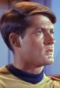

Kevin Thomas Riley |
|
|||||
|  |
Tenente assegnato all'Enterprise nella sezione comunicazioni.
È uno dei
superstiti al massacro avvenuto su
Tarsus IV nel
2246 per opera
di
Kodos in cui però morirono
tutti i suoi famigliari. Nel
2266 è uno dei nove sopravvissuti in
grado di riconoscere
Kodos. Viene trasferito dalla sezione
comunicazioni alla sala macchine. Viene intossicato con del
tetralubisol versato in una bevanda da
Lenore Karidian con l'intenzione di ucciderlo.